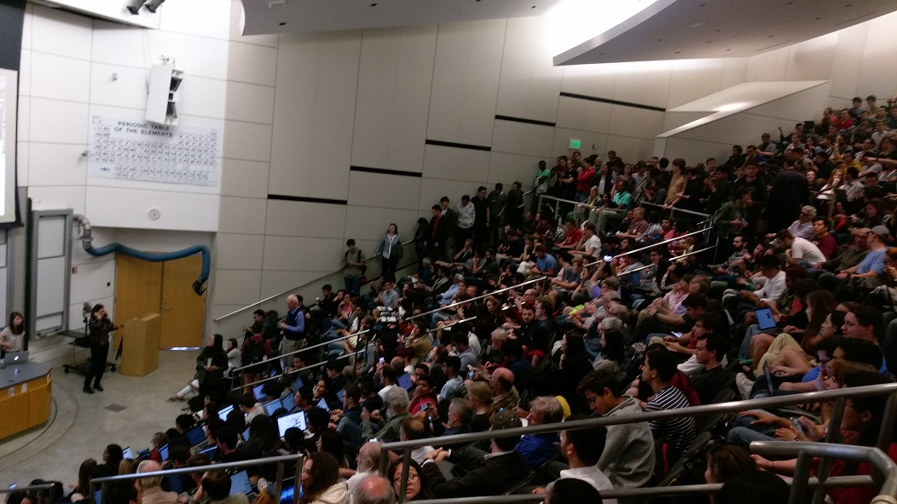

An Ordinary Extraordinary Day
Often as we go about our busy lives, the days just go by one by one. If only we could stop to look about us and enjoy the scenery!
Today (April 17, 2019) wasn't a particularly special day, but it was remarkably wonderful and insightful in its own way. Somehow, at the end of the day, I ended up deeply awed at the state of the world today, with human germline gene editing around the corner, with technology pushing the limits of physics on the small scale and the large scale, with China rising in power and influence, with social media and internet memes affecting our lives beyond any way we could imagine. Somehow I'm lucky enough to go to a school where all these urgent (!) concerns trouble us and drift around us on a daily basis, where we're right in the middle of so many things happening.
If only we would stop to look at the flowers. After two years at such an incredible institution, today I wanted to step back and just rememember how remarkable it is to be alive in 2019 and to live amongst an incredible community of scholars. There was no particular reason for why today. It was an ordinary day, with lots of mundane banalaties of college life, but extraordinary in so many regards.
I've documented all the boring details and silly thoughts below.
Outline
Weak Sunlight and Shower Thoughts
I woke up at 8:30am to weak sunlight. The housing people decided to install some stupid new ‘‘blackout’’ shades that block all the light from coming into the room, which is absurd, because there's a streetlamp right outside my window, so if I leave my blinds up, then I can't fall asleep at night, but if I put my blinds down, then I can't wake up in the morning! So I inevitably always wake up much later than Mother Nature and Sunlight would like me to. It's one of the true disasters of living right next to a streetlight. I'm thinking about throwing a rock at the streetlight to put it out of commission (and put my bedtime back in commission), but some part of that seems ethically wrong. There's got to be a solution somehow.
Speaking of ethically incorrect decisions, I then decided to watch some youtube on my phone just for a bit, which of course ended up being much longer than just for a bit because my early-morning brain has little self-control, and because those recommendation algorithms are just too damn addictive (ugh!). I watched a little clip of the mathematical physicist Freeman Dyson (more on him later today) telling the classic story about his journey to visit Enrico Fermi in Chicago. It's a short, humbling, and entertaining tale, and I'm glad I came across it so young in my own scientific journey. Incredible how he's in his nineties and still sharing his wisdom with all of us. And then the Invisible Hand of Recommendations directed me to an ElectroBOOM rant about the inefficiencies of our power sources in our everyday lives, which felt completely ridiculous and borderline misinformative to me, so I'm not going to link it here.
He compared the performance of a wireless charger to a wired charger, which was 40% worse or something. He thought that was terrible efficiency. I wasn't surprised actually, I was kind of glad they got within a factor of 3, which is good enough order of magnitude for me.
He then talked about how car engines and steam turbines something like 30% efficient, which I thought, come on, I'm pretty sure there's some hard thermodynamic limit to the efficiency in these sorts of processes!
And so on and so forth. I was kind of sad about this video, because some of his older stuff was (can I dare to even say?) better thought out, and this one really didn't have any information I couldn't learn from wikipedia, and it wasn't even that entertaining to watch. I think the guy's sold out by now. Sad to see.
The recommendations then pointed me to some minecraft videos (my not-so-secret vice)…
Anyways, after a while, I lifted myself out of degeneracy (with a mysterious symmetry-breaking perturbation) and went to the shower. My roommate and I have a silly signalling system to make sure we don't lock each other out when we're showering: I put a little plastic cup on the door handle, and he hangs his helmet. The joys of college life.
Here were my shower thoughts:
I really need to banish the phone from my bedside! I could have had a productive, thoughtful morning, yet I wasted a good chunk of it laying around wasting away watching youtube. It's a bad habit. Perhaps I just need to enforce to myself ‘‘no technology within an hour of going to bed or waking up’’. It would help me lead a more disciplined, natural life…
Is it my fault for having an addictive brain or the technology's fault for being so addictive? I can't change my psychology; it's way too much fun to have a fiddly shiny little device at my fingertips that can keep me entertained for hours and hours! I think technology creators ought to have the duty to protect users from their own addiction. Or at least, there's a strong argument to be made for that case.
In general, I'm starting to feel that technological development has reached the point of hurting people more than it is helping people, at least in priveleged places like Stanford. Everything we need for a (physically) comfortable life – food, water, comfortable shelters, basic health care, and now, easy communication – we've accomplished already. And historically, technological growth has come hand in hand with scientific development (since the Industrial Revolution ish, when Westerners realized that investing in science had ridiculous returns). But in honesty, do we still need more technology to improve our quality of living? I realize that you never know what consumers want until you invent something and show it to them, but really, I struggle to think of what basic functions of happiness are still missing for us lucky people in the developed world. And it seems like new things like cell phones cause more problems of addiction and loneliness than benefits of…instantly messaging our friends?
I think our generation will be the last generation of scientists. Controversial opinion, perhaps a bit cynical, but I'm really starting to feel that the paradigm of large-scale government-funded scientific research will end sometime during my lifetime!
Science has a few main driving forces: the innate curiosity of humankind, the promise of the unknown, the hope for technological growth, and politicoeconomic funding (is that a real word?). The first and the second will never die, but now that new technologies bring less clear marginal good, I'm not sure how long the third and the fourth will last. I feel like once the Earth's population reaches its inflection point sometime in the next few generations, then the exponential growth so characteristic of human development will start to dampen down, including our raw belief in the progress of science, in the good of technology, in economic growth, etc. The pursuit of curiosity is a noble goal, but it may perhaps not be economically feasible in the future once we pass the inflection point of human development. (For all we know, it may not be socially feasible either if the attitude towards technological growth changes!)
Anyways, it was probably time for me to get out of the shower, since I had all these wacky ideas going through my head. I started thinking about how my friends would respond if I told them my ideas, whether they would nod thoughtlessly or whether they would tell me that I was full of shit. Thankfully I realized that most of them would tell me I was full of shit. I couldn't tell whether this was a sign that I picked good friends, or whether it meant that I was actually on to something meaningful.
Committed to reducing my screen time for the rest of the day, I put my phone on silent. I walked over to the dining hall as per my morning ritual. Breakfast has become a bizzarely optimized routine of college life – I've figured out every last muscle movement, from which of the four sets of tinted glass doors to push open, to the number of oatmeal scoops I need to fill the small soup bowls. I went through my super-automated breakfast, loaded my silverware into the dishwasher (cup in left hand and plate in right hand to avoid arm-crossing), and continued on with my day. First in the morning was a piano lesson with Dr. Weldy. Last week I learned a short Brahms intermezzo, a delicate and sensitive little piece. I thought we'd only spend half the lesson on it, but after I played it through, Dr. Weldy told me it was a ‘‘good start’’ and began to pick through every detail of the piece. As it turns out, I had glossed over many subtle points on phrasing, articulation, pedaling, voicing, touch, tempo, and so on. I found it remarkable how carefully I had to read the markings on the page! So we spent the rest of the hour on careful points, such as how to use the pedal so that the left hand played a smooth legato while the right hand played with an otherworldly detatched sound. After the lesson finished, he told me once again that it was a ‘‘good start.’’ I was astounded by how effective this phrase was – it encouraged me to continue tackling the details of this music without discouraging me about my initial interpretation. After jotting down the musical ideas from my lesson into my notebook, I was about to head over to the student center to do some errands and homework, but I heard a voice shout my name. Ah! I was supposed to return a quarter-to-eighth-inch-audio-adapter that I borrowed from him. Embarassed, I shuffled over, pulled it out of my bag, and handed it back. It turns out that he tried to call me a few minutes ago, but I didn't pick up since my phone was on silent. And my phone was on silent so that I wouldn't be addicted to it for the rest of the day. The perils of modern technology – everyone expects you to respond to your phone. Maybe it's not so easy to go screenless! Once I found a nice little spot in the student center, I pulled out my laptop to run some very non-glamorous errands: I paid some unpaid dues on my student bill. So much money! I double-checked some printing reimbursements for a chamber orchestra I'm part of. I made sure there were no random fraud charges on my credit card. I touched up on my keyboard shortcuts for SumatraPDF. I read about Paul Erlich. I responded to an email from a freshman from my high school who wanted some advice on finding summer academic internships in this ever-competitive era of college admissions. I took a gig for Friday night in San Francisco for BATS improv, since they needed a musician to play for their show. I caught up on some reading for my bioethics class. And then I ate some lunch very quickly – not so mechanical, since the food is different every day – and headed to my bioethics class.
It was a ‘‘classic’’ college course, filled with a few hundred people in a lecture hall, some taking notes on rickety puny folding desks, some completely spaced out browsing tattoos online, some asking questions way more frequently than they ought to, etc. The most remarkable aspect about this bioethics course was that the professor served on an ethics committee whose job was to solve ethical dilemmas! He had this beeper that would go off if the hospital on campus was faced with a high-stakes ethical situation, and then he'd have to meet with a group of people to decide the ethically proper decision to take. For instance, on the first day of class, he had introduced us to the flavor of course material just by telling three stories of ethical dilemmas he had to solve that week – about patients whose religious beliefs forbade their treatment, about terminal patients with no chance of recovery whose families wished to continue expensive and ultimately fruitless care, and many more stories. I found it very humbling that the philosophical theories and ethical codes that he taught us about in class were directly practically applicable, and not just some theoretical, far-removed construct in a frayed textbook. These were real people, facing real situations, with no clear answer of the ‘‘right’’ action to take. And the man helping to make these tough decisions stood in the room right in front of us, gesticulating and wandering and answering questions! That day in class, we talked about the ethics of medical research, a rather tough question (just like everything else in the class). The crux of the issue is that a doctor conducting a research study has two duties at the same time: a duty to heal the individual patient, and a duty to generate the knowledge to help future patients. Today's regulations make sure that anyone who chooses to join a research experiment has to give their informed consent. In contrast, half a century ago, it was culturally accepted that research subjects would have no idea what they were part of. The concept of skipping participant consent sounds almost barbaric today, but for most of medical history, that's just the way things were done. It took atrocities such as the infamous Tuskegee ‘‘study in nature’’ of untreated syphilis, or the terrifying Nazi human experimentations, for international committees to come together and decide to write down regulations. We talked about the contents of these various codes of conduct (Nuremburg, or Helsinksi, or whatever, I've forgotten by now), and all these concepts seem very natural to us millenials – a participant of a study must understand the risks and benefits, must not be coerced into participation; an independent group of people must approve the study (to avoid the experimenter's conflicting interests), and so on and so forth. Again, in the grand scheme of human history, it's remarkable how ‘‘modern’’ new these developments are, and we all take them for granted today. Well, maybe not completely. I was reading the other day about prisoner organ harvesting in China, which also sounds like another atrocity and ethical problem upon itself… Once the bioethics class finished up, I had an awkward half an hour before my next class, and I've never really known what to do during these strange half-hour-gaps. I decided just to chill in the physics lounge for a bit. There were a few classmates up in the lounge, but they were working on a project, so I was just checking out a magazine (these things still exist??) lying on the table. It was a ‘‘Phyics Today’’ magazine. As I mindlessly flipped through the glossy pages, I found some pretty hilarious advertisements for state-of-the-art lab equipment which looked like flashy vacuum cleaner commercials, except they were filled with all these technical words that I didn't understand. It felt like something out of a sci-fi movie. I flipped through some editorial about the state of different fields, and again I was entertained by the funny juxtaposition of a casual magazinish writing style with incredibly inscrutable jargon. There were also some book reviews in the back of the magazine, and to my surprise, I actually recognized some of the books. One was about the ‘‘ecosystem’’ of science, including the labs, the funding agencies, the newspapers, the government decisions, the glossy and non-glossy journals, the crowded conferences, and so forth. As I sat there reading the book review, I started remembering the main messages that I got out from reading it last summer… One central take-away was that the ecosystem of science functioned just like any biological ecosystem, where all the various parts interacted in complicated ways. Later in the book, it started discussing how the future of science would evolve from the incentives of today, with the increasing number of people doing research in different fields (I think the book said 1 million?), the increasing selectivity of top journals (single-digit acceptance rates, just like these absurd undergraduate institutions), the difficulty and randomness of getting funded, the intolerable obsession with metrics and citations, and an unrelenting ‘‘publish or perish’’ pressure to make an impact. At the end of the book, I had scribbled down the thought, ‘‘Does the current ecosystem incentivize the right things? A hawkish high-impact sort of academic…’’ Indeed I wonder. I no longer remember if it was my own thought or if it was a suggestion proposed by the book. The other book review I recognized was about a book that I checked out from the library the day before! (It was really hard to find, hiding in the sixth floor of the claustrophobic west stacks…) The book was Freeman Dyson's autobiography, told through letters that he wrote to his family as a young adult. I find it very inspiring how cultured, curious, and broad-thinking he was. He exudes a sort of gentlemanly and scholarly intellectual curiosity that I aspire to attain. I wonder whether this mindset still exists in the twenty-first century, and whether it's even relevant in our modern, industrialized, transactional world. At this point, I had somehow eaten through my half-hour of free time (including transit time, small talk, et cetera), so I went back down the stairs and walked across the street to my quantum mechanics lecture. Here was classic college physics lecture; a much cozier, intimate, and slow-paced affair. About twenty of us huddled into an oddly-shaped room for a graduate lecture (which was funny since half the class was undergrads!). The professor was a calming, white-haired, abstract careful thinker, not detached and formal like the traditional stereotype, but a west-coast, down-to-Earth, casual intellectual. Before class even began, we addressed the elephant in the room (or rather, the elephant in the room down the hall). The class was supposed to end at 5pm, but Katie Bouman from the black hole image collaboration (EHT) was going to give a talk at 4:45pm in the room down the hall, and we all wanted to go. So we decided to end the lecture at 4:30pm, hopefully leaving enough time for us to grab seats in the room (or so we thought…) We then talked about the final project for the class – a little independent research thing exploring some aspect of quantum mechanics. As he was going through the list of previous project ideas, I had a strange feeling that all these concepts were marginally interesting to me, yet not deeply interesting, and I didn't know whether I'd be able to commit myself to digging in and creating a 15-page report out of any of them. I zoned out for a bit, thinking about what might actually be interesting for my strange tastes, and actually managed to come up with a few ideas: Something about the typical variational calculations used in quantum chemistry – how close do typical ‘‘basis sets’’ come to completing the entire space of functions? What's even a good metric for judging how ‘‘good’’ a basis set is – just the error in energies? The Berry phase in relation to photochemical systems that pass from an electronically excited state to the ground state through a conical intersection. Does the Berry phase matter if you're thinking about picosecond-time-scale quantum dynamics? What exactly is a phenomological Hamiltonian? When are you allowed to treat a bunch of degrees of freedom together as one object, and when do you have to consider the various parts separately? For instance, when you pass a beam of buckyballs through a double-slit, it's able to interfere with itself as a matter wave. This can be easily understood if you write down the wavefunction of a buckyball. Yet a buckyball is not a single quantum mechanical particle/wave; it's a conglomeration of sixty carbon atoms, each with their own protons and neutrons and electrons. How does this work? What if the buckyballs each have their own vibrational/rotational excitations – will they still be able to interfere with each other? How about the indistinguishability of electrons and protons and neutrons? These seem like quite basic questions to me, but I don't remember learning the answers in my introductory quantum mechanics classes. The lecture itself was quite well explained, but I unfortunately found the topic itself a bit dull, perhaps unfairly so. We talked about the way you stitch together approximations of wavefunctions (the so-called WKB connection formulas), and it had a really fancy name of ‘‘matched assymptotic expansions’’. Oddly enough, in another class that I was taking, we had just spent an entire lecture on the same esoteric topic, but there we were talking about how to estimate the dynamics of a driven pendulum – a completely different subject matter entirely! For some reason, this coincidence happens a lot. I often see some concept come up in two completely unrelated classes: Earlier this quarter, the same two classes were talking about assymptotic series – series that don't actually add up to what you want them to add up to. One class was about estimating energies in quantum mechanics (perturbation series), and the other was about predicting the effect of Jupiter on the Earth's orbit. Last quarter, I was trying to solve a problem in my statistical mechanics class (the XY model in one dimension), and I came across a completely unrelated integral that we happened to use in our Fourier Transform class (a nasty special function called a modified Bessel function of the first kind). I totally would not have recognized it if I hadn't taken the other class. It's incredible that scientific knowledge is all intertwined and interrelated in unexpected manners. As soon as we hit 4:30pm, the class poured own the hallway in an attempt to get to the black hole imaging talk – and we were not a moment too late. The room was overflowing. People were leaking out of side doors and seeping into every possible crevice. Our huddle of physicists was one of the last to make it in, and thankfully we had a pretty great vantage point on the edge of a walkway, where we could see a slightly nervous speaker, an utterly befuddled host, and a endlessly restless crowd. The room was chaotic, the wifi no longer worked, and there were still 15 minutes before the talk began. Through the four doors, an endless inflow of incompressible people tried to find their way in. As I stood staring at the faces flowing through a doorway, one face in particular caught my attention: our physics department chair was in utter shock at the sheer number of people in the room, desperately scanning for an open chair. (He eventually found a seat on a stairwell). We were lucky we got in so early…Brahmsian Detail and Miscellaneous Errands
Bioethics
An Unexpected Magazine
Quantum Mechanics
Blurry Donuts
|  |
Last week, the image of the black hole went viral and generated lots amount of attention from the press. Regardless of the crazy publicity, I wanted to learn about the science behind the imaging procedure, and I think the fellow physicists around me felt a similar way. I wanted to judge the talk based on the merits of the science – were the concepts well-explained and well-motivated? Were there important implications and messages behind the work? And was the science carefully done?
Here is what I thought:
The host was quite personable and funny. As it turns out, the talk was just part of a casual weekly colloquium about image processing. The image processing folks had scheduled it a few months in advance, and had no idea that a random press release would cause the audience size to swell by a few orders of magnitude!
The speaker was a bit nervous – after all, who wouldn't be? The crowd was intimidatingly huge! I'm pretty sure she was a random postdoc a month ago, and all of a sudden this week she had to give a talk and get scrutinized by a ridiculous number of people. That's gotta be pretty terrifying for anyone.
The talk opened up with an overview for the layperson. Her words were clear, carefully chosen, and well-rehearsed. For a bit, I was afraid the whole talk would be a non-technical beat-around-the-bush affair, but thankfully we hopped into the details pretty quickly. Good pacing for the intro.
As I understood it, the main image processing task was to recover an image from a sparse fourier transform. That is, the measuring apparatus doesn't give you the full Fourier Transform (FT) of the image – it can only measure certain patches of frequency-space – and you somehow have to back out the original image from this sparse and incomplete information.
Physically, the reason you only sample parts of frequency-space is that there are only a finite number of radio dishes around the earth. The black hole image was reconstructed from radio signals collected from telescope dishes placed in specific locations around the earth, but to completely cover the frequency space, you need to cover the entire Earth with such detectors.
Furthermore, the nasty fact about radio telescopes is the insane amount of noise entering the detectors. Due to attenuation/absorption by the Earth's environment, the amplitude of the radio wave entering the detectors is uncertain (I think engineers call this the gain), and furthermore, since the waves travel faster or slower through different atmospheric conditions (I think, not too sure), the phase of the signal is also uncertain. Remember, to reconstruct an image from its Fourier Transform, you need to know the amplitude and phase of each component in frequency-space. But here, both the amplitude and phase are completely noisy, so how the hell are you supposed to reconstruct anything?
Remarkably, despite the noisy and incomplete information, the scientists were still able to reconstruct the image! As a non-image-processing-fella, I think this was the main takeaway from the talk. Today's algorithmic innovations and statistical methods for processing data allow you to basically perform magic and confidently extract signal from piles upon piles of noise.
Remember that no camera on Earth actually ‘‘captured’’ the image. Rather, it was algorithmically reconstructed and deduced from loads of indirect data by using really clever methods.
One particular fact I found remarkably clever was what they called ‘‘closure’’ relations. Even though the noise scrambled the absolute magnitude or phase of a telescope's signal, it couldn't scramble away particular relative magnitudes or phases. In fact, one could deduce certain invariants that wouldn't change – sums or differences of phases, or ratios of amplitudes – because the noise from different telescopes would cancel out! The noisy data could still yield reliable hard constraints on relations between the Fourier coefficients of different frequency components.
There were two main methods for the actual reconstruction of the real-space image from the sparse frequency-space data. As I interpreted it, the two methods differed in a way that I think is broadly general across computing today. One was a traditional approach that required expert hand-picking (CLEAN, I think it was called?), where the image was modeled by a sum of point sources, each with some spread function). The other approach was essentially a Bayesian maximum-a-posteriori approach (at least, that's how I interpreted it), where the image was chosen to minimize some log-probability ‘‘loss’’ that was a sum of two terms: a ‘likelihood’ term that modeled all the noise sources and a ‘regularization’ term to encode priors on an image distribution.
It seems to me that this sort of Bayesian-y method is quite general across computational tasks. For instance, in protein crystallography, your job is very similar to the black hole image: you're given some noisy data in reciprocal-space, and you have to reconstruct the original signal in real-space. Again, the loss function that you're trying to minimize consists of two terms; one of them (the log likelihood) penalizes your model if it's unlikely to reproduce the observed data, and the other (the log prior) penalizes your model if it's chemically implausible (e.g. if the bonds are the wrong length).
A significant fraction of the talk was about validation of the image, to make sure that they weren't biasing themselves by expecting to see a certain type of final result! After all, one must be careful to not to ‘‘overfit’’ signal where there is just noise. (For instance, check out this humbling paper about cryo-electron microscopy that discusses fitting Einstein from noise.)
I was thoroughly impressed by this section. The scientists were very careful to make sure they weren't fooling themselves. No matter how hard they tried to ‘‘break’’ the ring and loosen their priors or possible sources of bias, that the resulting ring seemed to still be there (that is, there genuinely appeared to be the signal in the buttloads of noise).
It turns out that the blurry picture that the team released to the press was actually a deliberate, conservative decision! That is, depending on the precise reconstruction methods, various artefacts would appear in the image, but you couldn't really trust whether they were actually part of the image or not. The team didn't want the public to read too much into what might be reconstruction artefacts or amplified noise or whatever the technical term is, so they chose to just show people an average blurred-out picture that only contained features that they confidently believed were in the original image.
I thought it was very honorable and scientifically proper that the team chose to extensively verify that they believed in the image before going to the press.
The talk finished up right on time and people clapped for a long, long time. I kind of wish that academic talks had ‘‘curtain calls’’ like in classical music concerts, where the conductor walks offstage and onstage over and over again, so that the energy of the applause waxes and wanes with a natural rhythm. Otherwise everyone just kind of stands there awkwardly staring at each other.
Anyways, the questions started pouring in. Thank goodness, the first few questions were serious technical questions. The speaker rephrased them clearly and answered them quite well. In one of the early questions, I recognized the sharp voice of my former classmate Guillermo, a friendly and thoughtful EE student who views everything under the sun in terms of optimization problems. Naturally he asked whether this problem was convex or not, and it turns out (well no shit!) it's not convex. Good to know.
I also distinctly remember a question about the nature of the radio wave signal. A quick of back-of-the-envelope calculation tells you that a 1mm radio wave has a frequency of around 300GHz, which correponds to a Nyquist sampling rate of 600 billion times per second, or once every 1.5 picoseconds!! How the hell do electronics work so fast, and how the hell do you store all that data as it's flowing out of the detector? On another note, the data was simply a 2-bit channel, meaning that it suffers severe quantization error (since the signal has to be rounded off to one of four possible values at every time-step), and I have no idea how you're able to deduce anything at all from such a ridiculously noisy signal. Perhaps the electrical engineers know.
The last few questions started getting kind of silly. One person asked about what advice the speaker would give to everyone in the room. I don't even remember how she responded, probably something along the lines of hard work and perserverence, but it just felt a bit absurd to me, since this event was an academic talk, not a TED talk.
When we started shuffling out of the room, I got into a long and detailed conversation with my friend Dom, an electrical engineering student. We slowly made our way over to dinner, talking about electrocuting hot dogs and the magic of noise cancellation…and through dinnertime, we continued a long conversation with friends, about the craziness of Bill Shockley (inventor of transistors who became a eugenicist late in life), about the pros and cons of UNIX ‘‘everything is a text’’ model, about too many things…by which point I was thoroughly exhausted with the day and retired for the night.
And there wraps up my ordinary extraordinary day. Lots of thoughts, too many thoughts, and never enough time to think thoughts through. I wanted to write about other recent topics as well, such as Steve Quake's recent interview with the NYT about the human-gene-editing-scientist JK He, but this blog post is already turning out way longer than I expected, and my other academic obligations are tugging at me.
Too many things are happening around me these days. The pace of the world goes faster and faster, and there's just so much to think about and no time to reflect. Every ordinary day contains so many extraordinary happenings and ideas, but there's never any time to pay attention.
And onwards we continue.
-Jeffrey Chang, April 20 2019.
 Back to my home page
Back to my home page{kind=link}